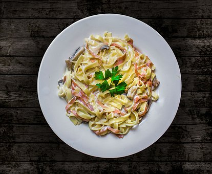
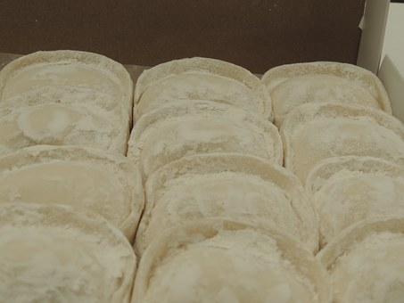

Favoritos


Historial
- Ingredientes
- Almacenes
- Recetas de la nona
- Recetas para el invierno
- Recetas para el otoño
- Recetas para la primavera
- Recetas para el verano
- Calculador de calorías
Carbonara
Buenos Aires, 10 de Agosto de 2018 Carbonara es un plato de pasta italiano originario del Lacio, y más concretamente de Roma. La receta original se basa en huevos,queso (Pecorino Romano o parmesano), aceite de oliva virgen extra, pancetta o guanciale y pimienta negra. Los espaguetis son la pasta generalmente utilizada; sin embargo, también se pueden utilizar fettuccine, rigatoni o bucatini.
Existen diversas teorías acerca del origen del nombre de este plato. Para algunos la palabra carbonara proviene de carbone, que en italiano es la denominación de carbón (Carbonari), y se cree que el nombre del plato tiene su origen en el plato típico de los elaboradores de carbón vegetal en los Apeninos. Otros mencionan que la denominación carbón se hace debido al empleo de la pimienta negra en la elaboración de la salsa que puede recordar al carbón. Algunas teorías dicen que el primero en darle el nombre fue el escritor culinario napolitano Ippolito Cavalcanti que en el año 1839 publica la receta por primera vez en su libro titulado: Cucina teorico-pratica.
Características
La pancetta se cocina en aceite de oliva virgen extra. La pasta caliente se combina, lejos del calor directo para evitar la coagulación del huevo, en la olla de pasta o en un plato de servir, con una mezcla de huevos crudos, queso Pecorino Romano rallado, el aceite extra virgen de oliva y la pancetta. Los huevos deben crear una salsa cremosa y no cuajar. La pancetta es la carne más utilizada, pero se utilizan también el guanciale y tocino local. Las versiones de esta receta pueden diferir en cómo se añade el huevo: la regla general es usar un huevo entero y una yema por persona, sin embargo algunas personas usan el huevo entero, mientras que otras personas utilizan sólo las yemas, las versiones intermedias con algunos huevos enteros y algunos yema también son posibles. Hay multitud de recetas que incluyen la nata aunque no forma parte de la receta original. El empleo de beicon (panceta o tocino en español) no aparece en la receta original y se cree que fue introducido en Roma cerca del año 1944 por las tropas aliadas tras la Segunda Guerra mundial.
Sorrentinos
Buenos Aires, 25 de Junio de 2018 Los sorrentinos son un tipo de pasta rellena argentina, parecida a los ravioli pero de mayor tamaño y de forma circular. Elaborados con harina, suelen llevar variedad de rellenos que pueden combinar queso, jamón, vegetales o frutos secos.
Existen varias versiones sobre el origen de esta pasta. La primera afirma que los sorrentinos nacieron en Sorrento (Italia) en 1958 en un restaurante llamado Buon Mangiare, donde un cocinero elaboró la pasta rellena de jamón cocido, mozzarella y provolone. Sin embargo, los sorrentinos no existen en Italia con ese nombre. Otras teorías indican que se crearon en la ciudad de Mar del Plata por un inmigrante italiano originario de Sorrento —o el hijo de este, Cayetano Persico—, mientras que otras fuentes afirman que se originaron en Buenos Aires, en un local llamado Sorrento o Sorrentino